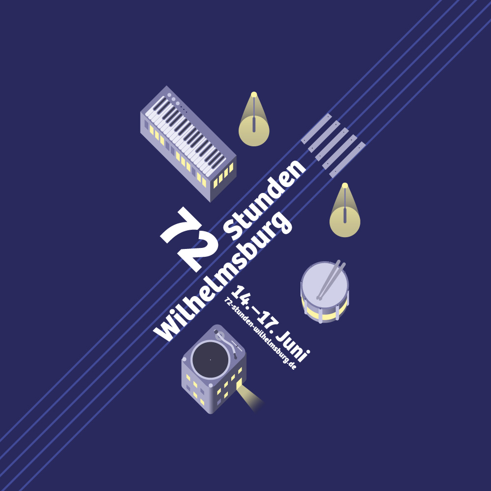
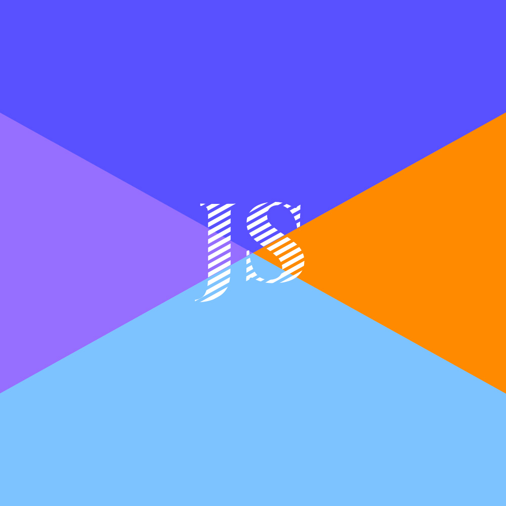
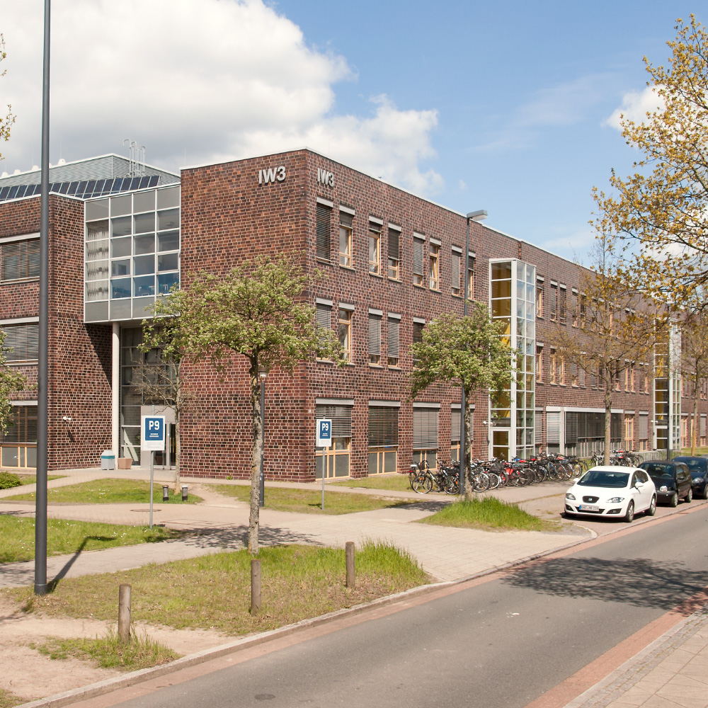
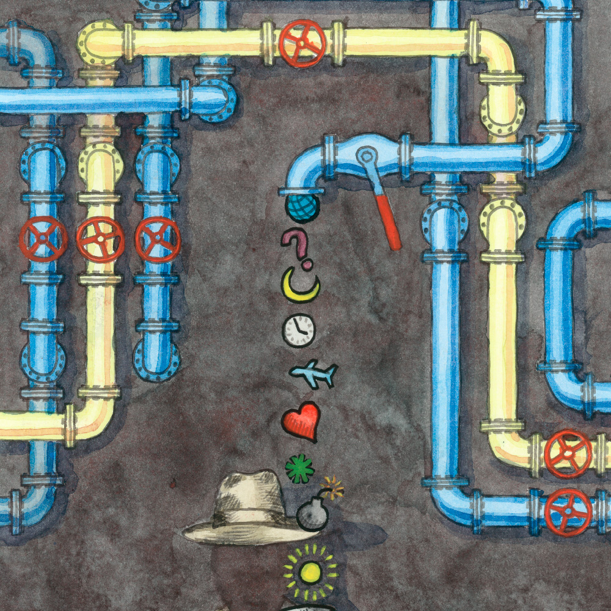
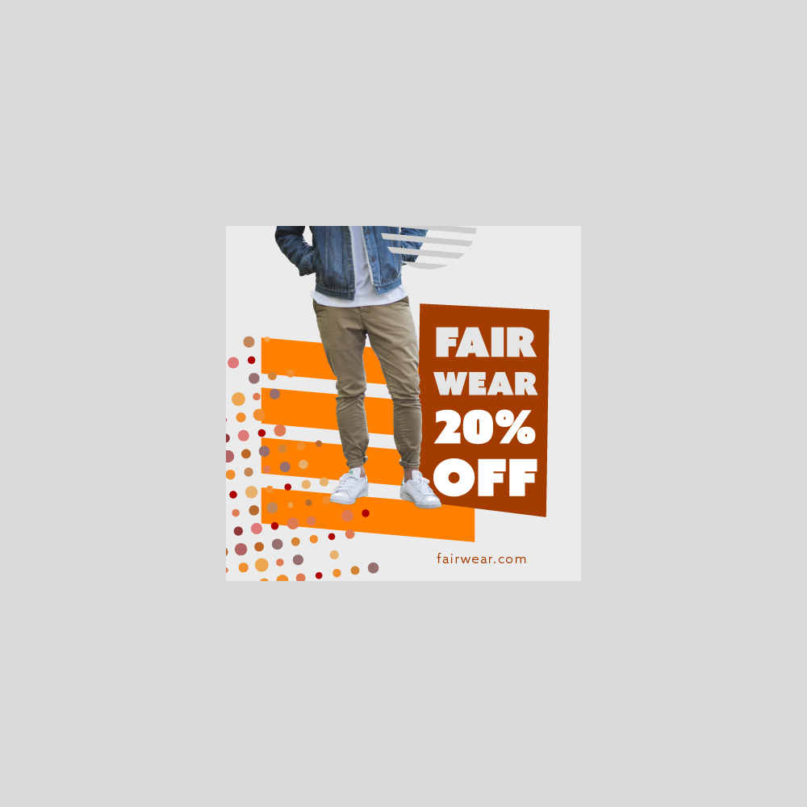
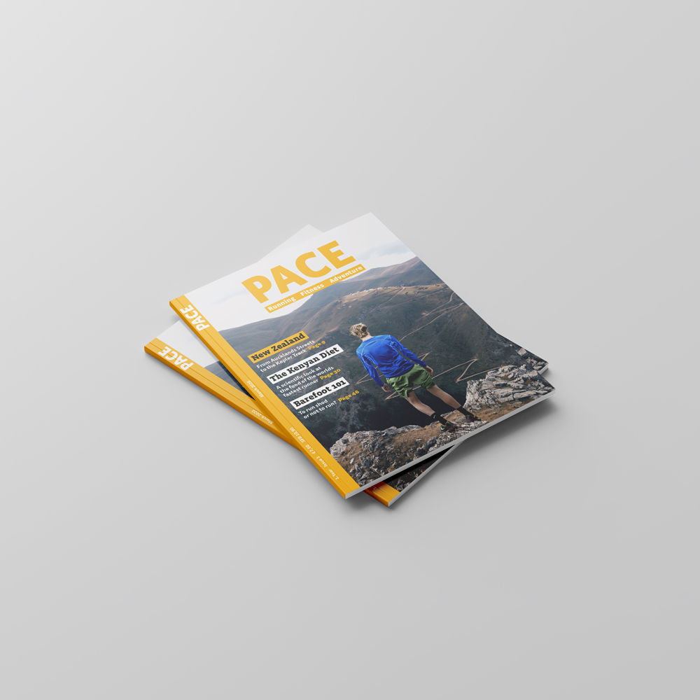

Projekte
Hier finden Sie meine bisherigen Projekte, u.a. aus den Bereichen Webdesign, Webentwicklung, Werbung, Markengestaltung, Information, Veröffentlichungen und Illustration. Melden Sie sich gerne auch ganz unverbindlich falls Sie Fragen zum Ablauf oder einer möglichen Zusammenarbeit haben. Vieles lässt sich im direkten Kontakt am besten klären.
-
72 Stunden Wilhelmsburg
Posterdesigns für ein Hamburger Stadtteil-Musikfestival mit FOkus auf Illustration.
-
Markengestaltung Design Nordic Jet Line

Logo-Redesign mit vollständigem Styleguide für ein Reedereiunternehmen.
-
Markengestaltung Seehusen Eventmanagerin
Konzept und Markengestaltung für eine Freiberuflerin inklusive Gestaltung von Büromaterialien.
-
Mediengestalter für das Bremer Institut für Strukturmechanik und Produktionsanlagen
Eine Auswahl von der Projekte, die während meiner Arbeit für das BIME (Uni Bremen) entstanden sind.
-
Krokusblütenfest Plakat

Plakatdesigns für ein norddeutsches Kleinstadtfestival mit digitalisierten Zeichnungen.
-
Illustration für das Flüchtling Magazin
Handgezeichnete Illustration für das Magazin „Kohero“ (früher „Der Flüchtling“) zum Thema Grundgesetz.
Über Mich

Den ersten beruflichen Kontakt stellte das Webdesign-Modul während meiner Ausbildung zum gestaltungstechnischen Assistenten dar, das mich wesentlich mehr begeisterte als der praxisferne Unterricht mit Delphi in der Schule. Als sich im Nebenjob während des Studiums die Gelegenheit ergab, für das Bremer Institut für Strukturmechanik und Produktionsanlagen eine kleine Internetpräsenz für eine ingenieurwissenschaftliche Konferenz zu machen, ergriff ich diese gerne und begann, tiefer in die Materie einzusteigen.
Seitdem habe ich als Mediengestalter bei mehreren Unternehmen viel mit Content-Management zu tun gehabt, musste mich aber auch wiederholt z.B. mit Plugin-Installationen in Wordpress oder Joomla-Migrationen beschäftigen. Dadurch reifte bald der Wunsch, mein Know-How im Grafikbereich mit Webentwicklung zusammenzuführen und dabei effektive, flexible, pflegeleichte und benutzerfreundliche Websitelösungen für kleinere Unternehmen zu schaffen.
Bewerbung
Gestaltungstechnischer Assistent mit Berufserfahrung als Freiberufler und Angestellter. Besondere Kenntnisse in den Bereichen Grafikdesign sowie Webdesign und -entwicklung. Empathiefähigkeit die nicht nur dem Verstehen von Zielgruppen, sondern auch dem alltäglichen Miteinander zugute kommt. Aktuell verfolge ich den Aufbau meines Portfolios und habe mich dabei zuletzt mit dem PHP-CMS Kirby beschäftigt und arbeite mich aktuell neben meiner Arbeit am Digital Career Institute in das Javascript-Framework Vue ein.
- Kontakt
-
Telefon
- +49 176 41 56 97 19
-
E-Mail
-
Social Media
- Person
-
Geburt
- 08. 05. 1988
- Achim
-
Adresse
- Hummelsbüttler Hauptstraße 16
- 22339 Hamburg, Germany
- 10.20-02.22
-
Kursteilnehmer Webentwicklung,
Digital Career Institute, Hamburg
HTML, CSS, Javascript, React, Node - 07.19-12.19
-
Mediengestalter, Fantec GmbH, Hamburg
Produktfotografie, Bildbearbeitung, Online Marketing / Content, Grafikdesign - 05.19-06.19
-
Reinzeichner ( freiberuflich ) für Hogarth Worldwide,
Hamburg
Layout, Reinzeichnung - 11.18-03.19
-
Mediengestalter, Druckcenter Hamburg, Hamburg
Verkauf, Kreation, Reinzeichnung, Druckproduktion, Werbetechnik - 05.18-07.18
-
Mediengestalter, Eurolight GmbH, Hamburg
Digital / Print Design, Corporate Design, E-Mail-Marketing, Produktfotografie - 10.17-01.18
-
Mediengestalter ( freiberuflich ) für
Essenberger Werbung & Design /
Marine Mammals Science Education, Husum
Wordpress, Digital / Print Design, Bildbearbeitung / Composing - 08.11-08.12
-
Fachoberschule ( allgemeine Hochschulreife Fachrichtung Gestaltung ),
Schulzentrum an der Alwin-Lonke-Straße, Bremen
Kommunikationsdesign, Produktdesign, Kernfächer - 08.09-08.11
-
Ausbildung zum staatlich anerkannten gestaltungstechnischen Assistenten,
Schulzentrum an der Alwin-Lonke-Straße, Bremen
- Kommunikationsdesign
- Produktgestaltung
- Fotografie Projektbasierte Ausbildung in Adobe CS Apps
- Designtheorie
- Designgeschichte
- Fotografie und Bildbearbeitung
- Werbepsychologie
- Grundlagen der Webentwicklung
- Drucktechnik
- Austellungsgestaltung und Modellbau
Digital
-
Languages
- JavaScript
- PHP/Twig
- CSS/SASS/Stylus
- HTML
- SVG
-
Frameworks/CMS
- Vue/Vuepress
- Kirby (Development)
- Wordpress (Content, Maintenance)
-
Tooling
- Ubuntu (Windows/Mac)
- Visual Studio Code
- NPM
- Git/Github
- Gulp
- NginX
- G Suite
- Webdesign (Wireframing, Mockups, Responsive Design)
- Barrierefreiheit
- Technical SEO
- E-Mail-Marketing
Grafik
- Layout
- Bildbearbeitung
- Corporate Design
- Produktfotografie
- Illustration
- Lettering
- Reinzeichnung
- Druckproduktion
-
Adobe Creative Cloud
- Bridge
- Lightroom
- Photoshop
- Illustrator
- InDesign
Softskills
- selbstständiges Lernen
- breite Allgemeinbildung
- gründliches und strukturiertes Arbeiten
- Auge für Details
- offen für Wünsche und Kritik von Auftraggebern und Kunden
- Fähigkeit (Design)entscheidungen zu reflektieren und verbal zu kommunizieren
- keine Hemmungen Unterstützung zu erfragen
Sprachen
- Deutsch ( Muttersprache )
- Englisch ( Selbsteins. B2-C1 )
Digital
Mein digitales Portfolio finden Sie auf Github unter github.com/m-podolski. Zur Zeit bin ich Schüler am Digital Career Institute und arbeite daneben an meinen eigenen (Frontend-/JS-)Projekten. Aktuell meint das meine eigene Website und andere Projekte, die noch in Vorbereitung sind.
Github Cards
Grafik

Zunächst habe ich mich vor allem mit Brand Design beschäftigt. Dabei sind mehrere kompakte Arbeitsproben entstanden, für die exemplarisch das Projekt Tischlerei Lüneberg steht.

Als Bespiel für eine vom Unternehmensauftritt getrennte Kampagne habe ich Werbemittel für die Fair Clothing Kampagne gestaltet.
Danach habe ich mich dem Medium Plakat gewidmet, um mich noch stärker in die Anforderungen werblichen Grafikdesigns einzuarbeiten. Dabei entstanden u.a. die Plakate für das Krokusblütenfest.

Mein letztes Projekt habe ich in Form eines Magazins erarbeitet, um die Bereiche Layout, Typografie, Illustration, Infografik und zu einem gewissen Grad auch redaktionelle Konzeption zu integrieren. Entstanden ist dabei das Magazin Pace.
„ Herr Podolski zeichnet sich durch großes Engagement aus und hat eine schnelle Auffassungsgabe,
kombiniert mit dem Willen und der Fähigkeit, die ihm übertragenen Arbeiten eigenständig zu lösen, sodass
er zu vielen Aufgaben herangezogen wurde, die er stets zu meiner vollsten Zufriedenheit ausführte. [ ... ]
Besonders hervorzuheben ist für mich, dass Herr Podolski auch bei Aufgaben, die nicht in den
gestalterischen Bereich sehr engagiert und gewissenhaft gearbeitet hat. [ ... ] Herr Podolski wird von mir
wegen seiner Zuverlässigkeit und Pünktlichkeit sehr geschätzt. Auch auf kollegialer Basis haben wir
schnell zu einer sehr positiven Ebene gefunden. “
Erwin Liauw ( Dipl. Grafikdesigner )
www.liauw-design.de
„ Herr Podolski erledigte seine Aufgaben mit großem Engagement und persönlichem Einsatz während
seiner gesamten Beschäftigungszeit an unserem Institut. [ ... ] Immer arbeitete Herr Podolski sehr zügig,
ergebnisorientiert und präzise. Er war in hohem Maße zuverlässig. [ ... ] Mit allen Ansprechpartnern kam
Herr Podolski gut zurecht und begegnete ihnen immer mit seiner freundlichen, zuvorkommenden Art. Dabei
wahrte er stets die Interessen des Instituts und zeigte eine hohe Integrität. Sein Verhalten gegenüber
Vorgesetzten, Kollegen und Externen war jederzeit einwandfrei. “
Alexander Bader ( Wissenschaftlicher Mitarbeiter )
www.bime.de
| Datei | Geändert | Größe |
|---|---|---|
| Zeugnisse.pdf | 24. März 2021 17:07:00 | 99 MB |
| Zeugnisse.pdf | 24. März 2021 17:07:00 | 99 MB |
| Zeugnisse.pdf | 24. März 2021 17:07:00 | 99 MB |
| Zeugnisse.pdf | 24. März 2021 17:07:00 | 99 MB |
| Zeugnisse.pdf | 24. März 2021 17:07:00 | 99 MB |
| Zeugnisse.pdf | 24. März 2021 17:07:00 | 99 MB |